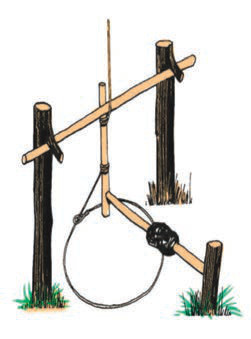
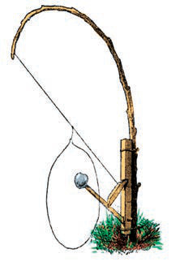
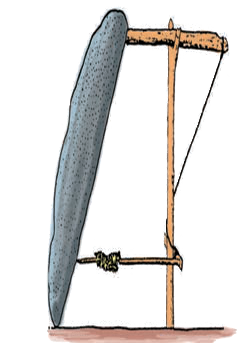
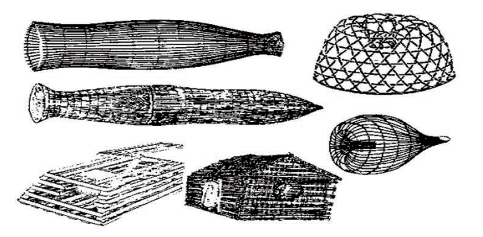

Angalia mifano ya mitego iliyotumika katika shughuli za uwindaji katika Kielelezo namba 9.




Kielelezo namba 9: Mitego ya asili ya kutegea wanyama na ndege
Aidha, jamii zetu zilikuwa na maarifa na ujuzi wa asili katika ususi, ufinyanzi, upishi na uhunzi. Baadhi ya jamii hizi ziliweza kufua chuma na kutengeneza bidhaa za chuma kwa ustadi mkubwa. Mfano wa jamii hizi ni zile za maeneo ya Karagwe, Ufipa na Ugweno. Zana walizotengeneza zilitumika katika kilimo, ufugaji, uvuvi na uwindaji. Maarifa na ujuzi katika uhunzi vilichangia kukua kwa shughuli za uchumi katika jamii. Hivyo, jamii zilizalisha ziada.